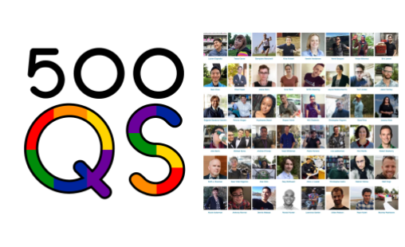
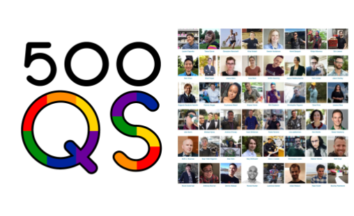
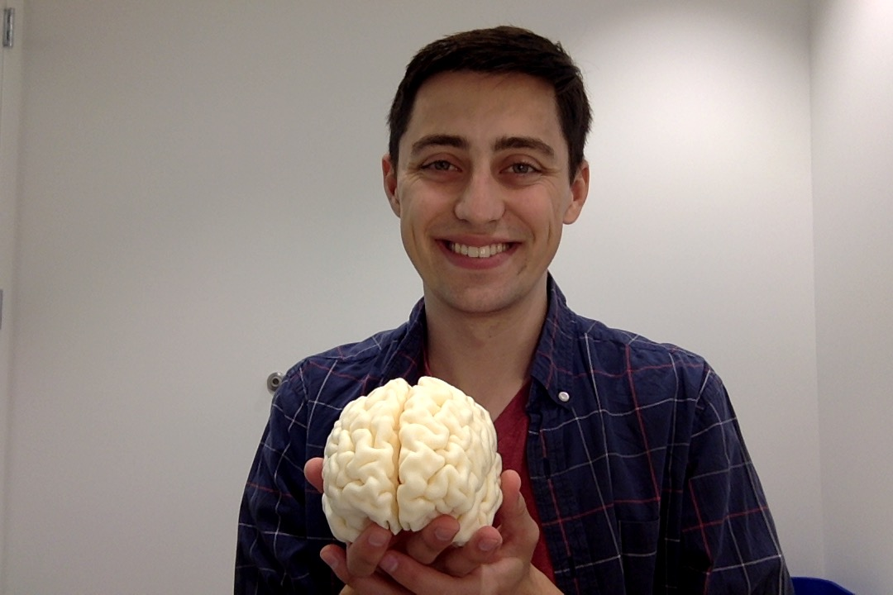

August 8, 2018
On October 8th, I will be running the B.A.A. Half Marathon in support of Bosotn Medical Center (BMC). This will be my third half marathon, but my first time running for a cause.
I will be raising money for BMC's comprehensive addiciton treatment programs. You can donate here.
 

Back in June, I added my name to the list of LGBTQ+ people working in STEM. Here I talk
a little bit about 500QS and other organizations for LGBTQ+ people working in STEM.

A few months ago Matt, another grad student in the lab, suggested we try 3D-printing our brains. Well we finally did it!
Recently, a few people have been asking how I made my website, so I decided to write a quick how-to guide. I've also included links to some of my favorite personal sites that others have created.